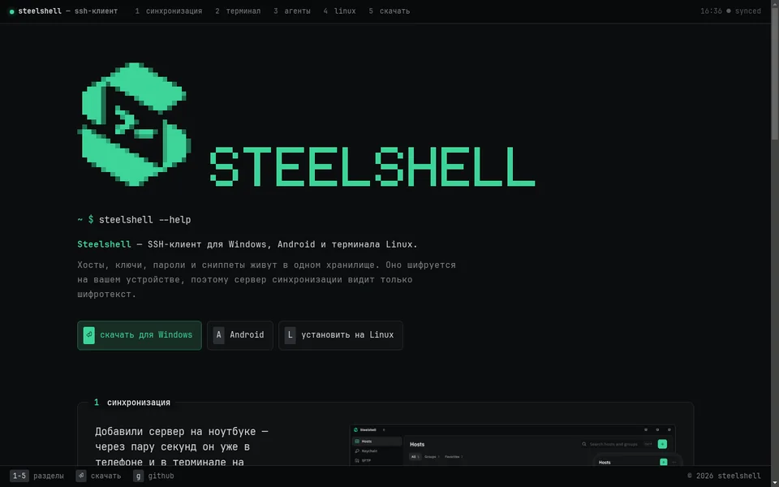
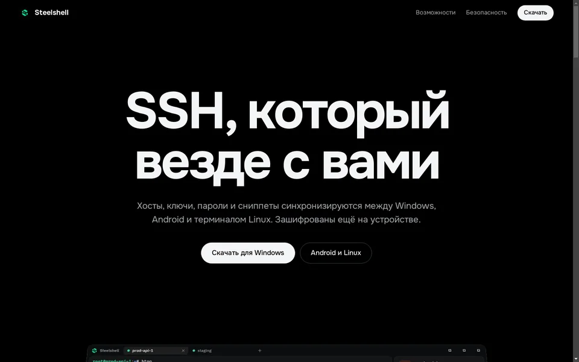
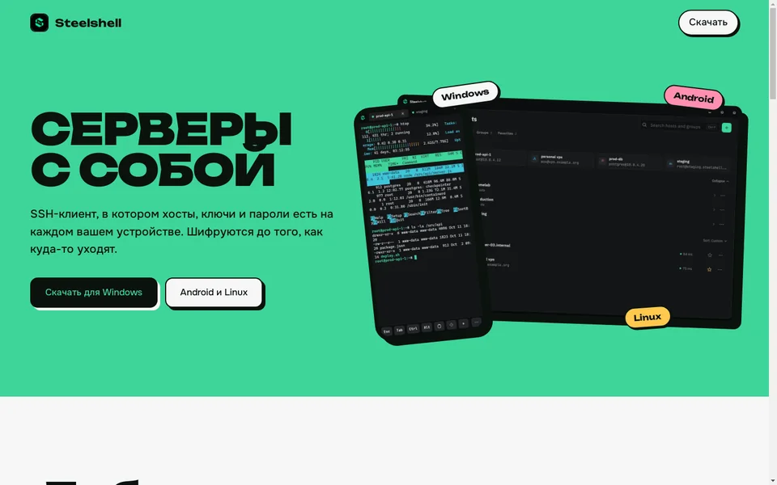
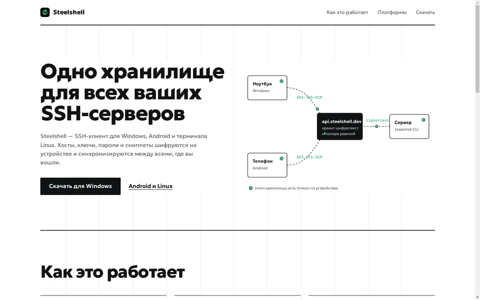

Четыре варианта сайта
Откройте каждый, на компьютере и на телефоне. Напишите номер того, что нравится, или что взять из разных.

1. ТерминалСайт как сессия Steelshell: моноширинный шрифт, пиксельный логотип, разделы переключаются клавишами 1–5, загрузки выбираются стрелками.
2. ПродуктЧёрный фон и большие скриншоты, окно приложения выпрямляется при прокрутке. Спокойно и дорого, в духе страниц Apple.
3. СигналФирменный зелёный на весь экран, широкий жирный шрифт, скриншоты как предметы с чёрной обводкой и тенью, кнопки «нажимаются».
4. СхемаБелый лист с видимой сеткой, живой чертёж синхронизации с бегущими пакетами, шаги 1–2–3 и честная таблица возможностей по платформам.